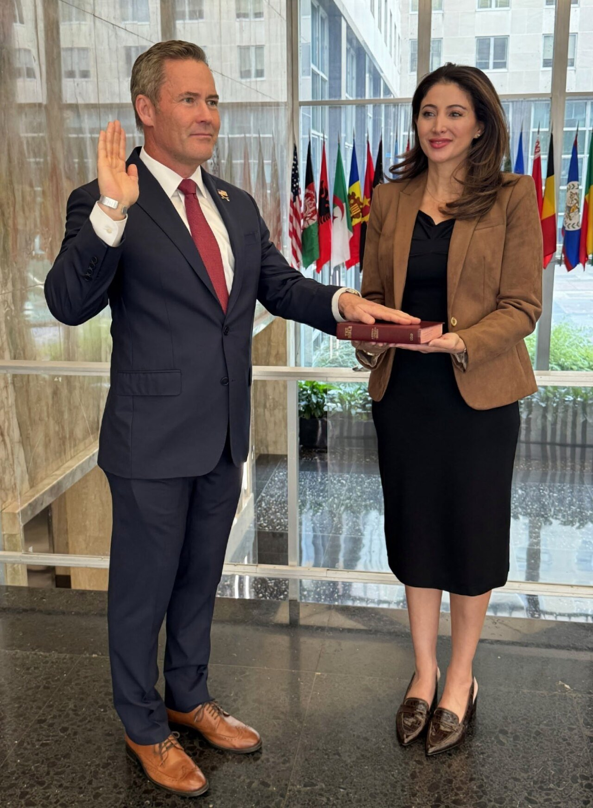
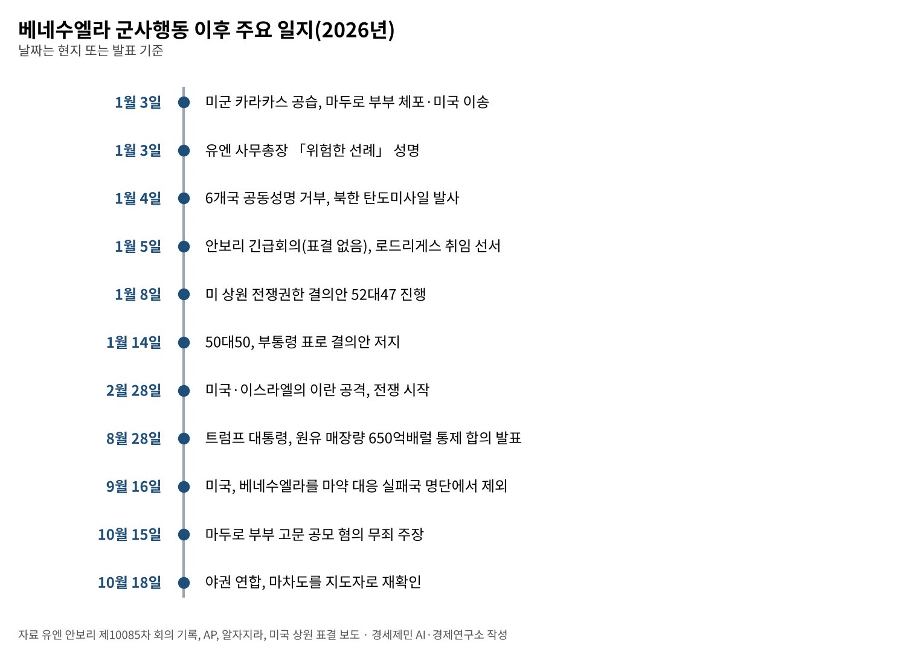
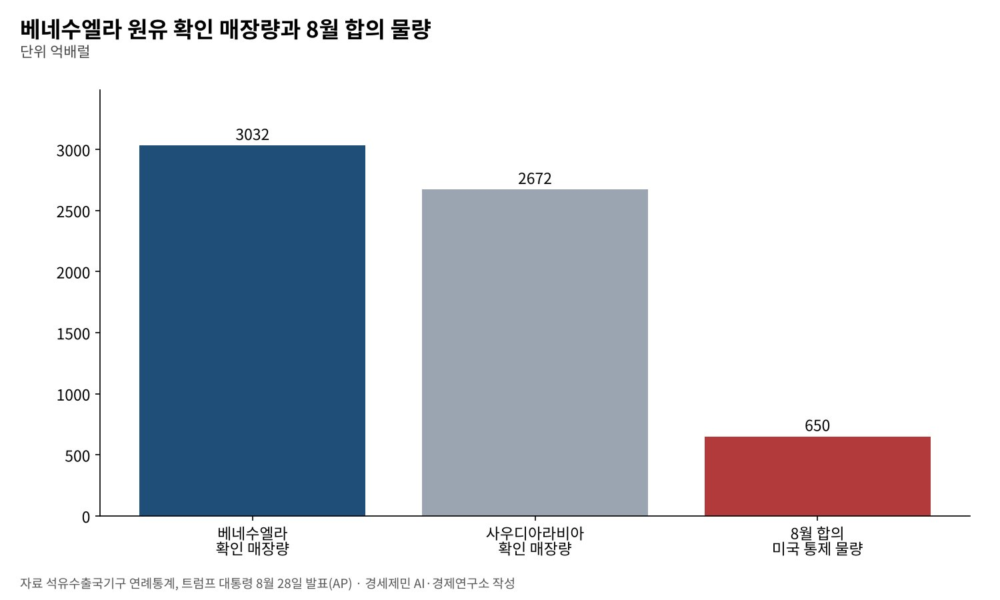

[국제] 베네수엘라 군사행동 아홉 달, 유엔헌장 2조 4항은 무엇을 지켰나
미국 「정밀한 법 집행 작전」 대 베네수엘라 「불법 무력 공격」, 안보리는 표결 없이 끝나
구테흐스 「위험한 선례」, 브라질·멕시코·스페인 등 6개국은 공동성명으로 거부
과도정부와 650억배럴 석유 합의, 마두로는 뉴욕 법정에서 면책을 주장
AI경제저널=김갑봉 기자 | 2026년 1월 3일 새벽 미군이 베네수엘라 수도 카라카스 일대를 공습했다. 특수부대가 니콜라스 마두로 대통령 부부를 붙잡아 미국으로 데려갔다. 트럼프 미국 대통령은 그날 미국이 베네수엘라를 운영하겠다고 말했다.
아홉 달이 지났다. 마두로는 뉴욕 연방법원에서 마약테러 공모 혐의에 이어 고문 공모 혐의로도 기소됐다. 그는 10월 15일 무죄를 주장했다. 카라카스에서는 델시 로드리게스 부통령이 임시 대통령을 맡고 있다.
이 글은 거친 낱말 대신 조문과 기록으로 사건을 다시 읽는다. 유엔헌장 제2조 4항과 제51조, 안전보장이사회 회의 기록, 각국 정부 성명이 잣대다. 강한 평가는 말한 사람의 이름을 붙여 옮긴다.

날짜로 본 아홉 달
미국 법무부는 공습 당일 뉴욕 남부연방지검의 기소 내용을 공개했다. 마약테러 공모, 코카인 반입 공모, 기관총과 파괴 장치 소지 혐의다. 마두로 부부는 1월 5일 첫 법정 출석에서 무죄를 주장했다.
베네수엘라 대법원은 3일 로드리게스 부통령에게 임시 대통령직을 맡겼다. 로드리게스는 처음에 미국의 행동을 불법 납치라 불렀다. 알자지라는 그가 이후 석유 산업 개방을 이끌며 미국과 가까워졌다고 전한다.
미국 상원은 1월 8일 의회 승인 없는 군사행동을 막는 전쟁권한 결의안을 52대47로 진행시켰다. 14일 공화당 의원 둘이 입장을 바꿔 50대50이 됐다. JD 밴스 부통령이 결의안을 막는 쪽에 표를 던졌다.
8월 28일 트럼프 대통령은 베네수엘라 원유 매장량 650억배럴을 미국이 통제하는 합의를 맺었다고 밝혔다. 9월 16일에는 베네수엘라를 마약 대응 실패국 명단에서 뺐다. 20여 년 만이다.
10월 8일 고문 공모 혐의가 새로 공개됐다. 마두로 쪽은 주권국 대통령과 영부인이라 재판 면책을 누린다며 기각을 요구하고 있다. 검찰은 두 사람이 고문을 직접 했다고 기소하지는 않았다.

미국의 논리, 「전쟁이 아니라 법 집행」
1월 5일 안보리 긴급회의에서 마이크 월츠 미국 유엔대사는 이번 작전을 「정밀한 법 집행 작전」이라 불렀다. 유엔 회의 기록을 보면 미국은 베네수엘라나 그 국민을 상대로 한 전쟁이 없다고 말했다.
미국은 근거로 뉴욕 대배심의 기소와 대통령의 군 통수권을 들었다. 자위권을 정한 유엔헌장 제51조는 내세우지 않았다. 자기 나라 형사 기소를 다른 나라 영토 안 무력 사용의 근거로 쓴 셈이다.
월츠 대사는 유엔이 불법적인 마약테러범에게 정당성을 줘서는 안 된다고 했다(AP). 영국과 덴마크, 파나마는 회의에서 마두로를 정당한 대통령으로 인정하지 않는다고 밝혔다.
마두로 정부의 정당성 문제는 오래됐다. 2024년 대선 결과는 야권과 외부 감시단이 거듭 문제 삼았다. 그러나 정부의 정당성과 무력 사용의 적법성은 국제법에서 따로 따지는 문제다.
조문으로 본 쟁점, 제2조 4항과 제51조
유엔헌장 제2조 4항은 회원국이 국제관계에서 무력의 위협이나 행사를 삼가야 한다고 정한다. 다른 나라의 영토보전과 정치적 독립을 해치는 무력이 대상이다. 예외는 안보리 승인과 자위권 둘뿐이다.
제51조는 회원국이 무력공격을 받으면 안보리가 조치할 때까지 자위권을 인정한다. 미국이 베네수엘라로부터 무력공격을 받았다는 주장은 회의 기록에 없다. 이 작전을 승인한 안보리 결의도 없다.
미주기구 헌장 제19조는 어떤 이유로든 다른 나라의 내정에 개입할 권리가 없다고 쓴다. 제21조는 한 나라의 영토를 일시적으로라도 군사 점령이나 무력 조치의 대상으로 삼을 수 없다고 정한다.
베네수엘라는 안보리에 보낸 서한(S/2026/5)에서 미국이 제2조 4항을 어겼다고 주장했다. 제51조 자위권도 유보했다. 사무엘 몬카다 유엔대사는 법은 선택이고 힘이 진짜 심판이 되는 세계를 경고했다.
쟁점은 하나로 모인다. 한 사람을 재판에 세우려는 형사 절차가 다른 나라 수도 공습의 근거가 될 수 있는가. 이 질문에 그렇다고 답하면 기소장을 쓸 수 있는 모든 강대국이 같은 논리를 빌릴 수 있다.
국제사회의 반응, 규탄과 절제 사이
안토니우 구테흐스 유엔 사무총장은 3일 대변인 성명에서 이번 사태가 「위험한 선례」라고 했다. 5일 안보리에서 로즈메리 디카를로 사무차장이 대독한 발언은 국제법 규칙이 지켜지지 않았다고 우려했다.
구테흐스 총장은 마약 밀매 같은 문제를 다룰 도구가 국제법 안에 있다고 했다. 그 길로 가야 한다며 「법의 힘이 이겨야 한다」고 덧붙였다. 무력 대신 사법 공조와 국제 협력을 쓰라는 뜻이다.
브라질·칠레·콜롬비아·멕시코·우루과이·스페인은 4일 공동성명을 냈다. 다자 승인 없는 군사행동이 헌장의 무력 사용 금지에 어긋난다며 거부했다. 베네수엘라 자원을 외부가 통제하려는 시도도 우려했다.
룰라 다시우바 브라질 대통령은 공습과 체포가 「용납할 수 없는 선을 넘었다」고 했다(EFE). 콜롬비아의 레오노르 살라바타 유엔대사는 민주주의를 폭력과 강압으로 지킬 수는 없다고 했다.
중국은 안보리에서 미국이 자기 힘을 다자주의 위에 뒀다고 했다. 바실리 네벤자 러시아 대사는 미국이 최고 재판관을 자처하게 둘 수 없다고 했다. 북한 외무성은 4일 주권 침해라 비난했고 같은 날 탄도미사일을 쐈다.
미국의 동맹은 말을 골랐다. 프랑스는 이 작전이 무력 불사용 원칙에 어긋난다고 했다. 덴마크는 국경의 불가침은 협상 대상이 아니라고 했다. 반면 아르헨티나는 미국 대통령의 결단을 높이 평가했다.
안보리는 이날 결의안을 표결하지 않았다. 1989년 미국의 파나마 침공 때는 규탄 결의안이 미국·영국·프랑스의 거부권에 막혔다. 헌장 제27조 3항은 분쟁 당사국의 기권 의무를 제6장 결정에만 둔다.

석유와 정치, 아홉 달 뒤의 카라카스
트럼프 대통령은 공습 당일 「우리는 석유 사업을 한다」며 원유를 다른 나라에 팔겠다고 했다(자메이카글리너). 미국이 쓴 돈은 땅에서 나오는 돈으로 모두 돌려받겠다고도 했다. 석유는 처음부터 말 속에 있었다.
베네수엘라의 원유 확인 매장량은 석유수출국기구(OPEC) 기준 3032억배럴로 세계 최대다. 사우디아라비아는 2672억배럴이다. 미국 에너지정보청(EIA)은 베네수엘라 생산이 세계의 1% 안팎이라고 본다.
8월 합의의 650억배럴은 OPEC 기준 매장량의 21%다(연구소 계산). 합의의 세부 조건은 공개 자료로 확인하지 못했다. 알자지라는 이 합의를 새로운 식민주의라 부르는 비판이 있다고 전했다.
알자지라는 미국이 베네수엘라 석유 자원을 통제하며 개혁을 압박한다고 썼다. 대통령 선거 날짜는 아직 정해지지 않았다. 트럼프 정부는 안정과 경제 회복을 앞세우고 정치 이행은 뒤로 미뤘다는 비판을 받는다.
2025년 노벨평화상 수상자인 야권 지도자 마리아 코리나 마차도는 망명 중이다. 그는 1월 15일 백악관에서 메달을 트럼프 대통령에게 건넸다. 노벨상을 주는 연구소는 상을 다른 사람에게 옮길 수 없다고 밝혔다.
야권 연합은 10월 18일 마차도를 지도자로 다시 확인했다. 법원은 그의 공직 출마 15년 금지를 유지했다. 마차도는 내년 7월까지 선거를 바란다고 파이낸셜타임스에 말했다(알자지라 인용).
무엇을 남겼나, 선례의 값
베네수엘라 작전 여덟 주 뒤인 2월 28일 미국과 이스라엘은 이란을 공격했다(브리태니커). 그 전쟁은 10월에도 끝나지 않았다. 구테흐스 총장이 말한 선례의 무게가 숫자가 아닌 사건으로 쌓이고 있다.
덴마크 대사는 미국을 거명하지 않고 국경의 불가침을 말했다. AP는 같은 회의 무렵 트럼프 대통령이 덴마크 영토 그린란드를 차지하겠다는 위협을 되풀이했다고 전했다. 동맹의 절제에는 이런 불안이 깔려 있다.
한반도에도 무관하지 않다. 북한은 이 작전을 주권 침해라 부르며 미사일을 쐈다. 지도자를 끌어내 법정에 세우는 장면은 핵을 협상 카드로 내려놓을 유인을 더 줄일 수 있다(연구소 판단).
헌장 제2조 4항은 강한 나라의 선의에 기대지 않으려고 만든 조문이다. 마두로 정부의 인권 기록을 묻는 일과 무력 사용의 적법성을 묻는 일은 다르다. 두 질문을 섞지 않을 때 국제법은 작은 나라의 방패로 남는다.
참고문헌
기관 자료
- 국제연합(UN), 「Charter of the United Nations」 전문(제2조, 제27조, 제51조). https://www.un.org/en/about-us/un-charter/full-text
- 미주기구(OAS), 「Charter of the Organization of American States」(A-41) 제19조, 제21조. https://www.oas.org/en/sla/dil/inter_american_treaties_A-41_charter_OAS.asp
- 국제연합 사무총장 대변인, 베네수엘라 관련 성명, 2026년 1월 3일(유엔뉴스 게재본 전재). https://www.globalsecurity.org/military/library/news/2026/01/mil-260103-unnews01.htm
- 국제연합 사무총장, 「Secretary-General's remarks to the Security Council on Venezuela」(디카를로 사무차장 대독), 2026년 1월 5일(전재본). https://www.globalsecurity.org/military/library/news/2026/01/mil-260105-unsg01.htm
- 국제연합 안전보장이사회, 제10085차 회의 「Threats to international peace and security」 기록(자동 전사본, 스페인어), 2026년 1월 5일. https://transcripts.un.org/es/sc/10085
- 스페인 정부, 「Statement from Spain, Brazil, Chile, Colombia, Mexico, and Uruguay regarding the events in Venezuela」, 2026년 1월 4일. https://www.lamoncloa.gob.es/lang/en/gobierno/news/Paginas/2026/20260104-statement-on-venezuela.aspx
연구 논문과 보고서
- Security Council Report, "Venezuela: Emergency Meeting", What's In Blue, 2026년 1월 5일. https://www.securitycouncilreport.org/whatsinblue/2026/01/venezuela-emergency-meeting.php
- Britannica, "2026 Iran war"(2026년 10월 20일 갱신본). https://www.britannica.com/event/2026-Iran-war
언론 보도
- Farnoush Amiri·Jennifer Peltz, "U.S. allies and adversaries alike use UN meeting to critique Venezuela intervention", AP(PBS 뉴스아워 게재), 2026년 1월 5일. https://www.pbs.org/newshour/world/u-s-allies-and-adversaries-alike-use-un-meeting-to-critique-venezuela-intervention
- "US allies and adversaries use UN meeting to critique Venezuela intervention as America defends it"(AP), 트리뷴데모크랫, 2026년 1월 5일. https://www.tribdem.com/news/u-s-allies-and-adversaries-use-un-meeting-to-critique-venezuela-intervention-as-america-defends/article_204a3795-0e74-5dfb-bcfc-dc51ac60e233.html
- "Trump says US is 'going to run' Venezuela, plans to sell oil to other countries", 자메이카글리너, 2026년 1월 3일. https://jamaica-gleaner.com/index%2Ephp/article/news/20260103/trump-says-us-going-run-venezuela-plans-sell-oil-other-countries
- "Lula da Silva afirma que captura de Maduro por parte de EE UU 'cruza una línea inaceptable'"(EFE), 엘에랄도, 2026년 1월 3일. https://www.elheraldo.hn/mundo/lula-da-silva-afirma-captura-nicolas-maduro-parte-estados-unidos-cruza-linea-inaceptable-AC28803311
- "North Korea fires ballistic missiles in first test of 2026"(AFP), EWN, 2026년 1월 4일. https://www.ewn.co.za/2026/01/04/north-korea-fires-ballistic-missiles-in-first-test-of-2026
- "Senate advances war powers resolution to rein in Trump on Venezuela", ABC7, 2026년 1월 8일. https://abc7news.com/post/senate-advances-war-powers-resolution-rein-president-trump-venezuela/18372940/
- "War powers resolution fails in US Senate after 2 Republicans flip, Vance breaks tie", 위스콘신이그재미너, 2026년 1월 14일. https://wisconsinexaminer.com/2026/01/14/repub/war-powers-resolution-fails-in-us-senate-after-2-republicans-flip-vance-breaks-tie/
- "Venezuela's Machado presents her Nobel Peace Prize medal to Trump", ITV, 2026년 1월 16일. https://www.itv.com/news/2026-01-15/venezuelas-machado-says-she-presented-her-nobel-peace-prize-medal-to-trump
- "Trump says US has entered deal with Venezuela to control 65 billion barrels of its oil reserves"(AP), PBS 뉴스아워, 2026년 8월 28일. https://www.pbs.org/newshour/amp/politics/trump-says-u-s-has-entered-deal-with-venezuela-to-control-65-billion-barrels-of-its-oil-reserves
- "US removes Venezuela from list of drug transit production countries"(로이터), 알자지라, 2026년 9월 16일. https://www.aljazeera.com/news/2026/9/16/us-removes-venezuela-from-list-of-drug-transit-production-countries
- "Venezuela's Maduro pleads not guilty to US conspiracy to torture charges", 알자지라, 2026년 10월 15일. https://www.aljazeera.com/news/2026/10/15/venezuelas-maduro-pleads-not-guilty-to-us-conspiracy-to-torture-charges
- "Venezuela opposition renews support for Maria Corina Machado as leader", 알자지라, 2026년 10월 18일. https://www.aljazeera.com/news/2026/10/18/venezuela-opposition-renews-support-for-maria-corina-machado-as-leader
[사진 출처]
- [사진1] U.S. Mission to the UN, "Mike Waltz sworn in as US ambassador to UN - Sep 20, 2025.jpg", 위키미디어 공용, 퍼블릭 도메인. https://commons.wikimedia.org/wiki/File:Mike_Waltz_sworn_in_as_US_ambassador_to_UN_-_Sep_20,_2025.jpg
※ 이 기사는 AI 프로그램 클로드를 활용해 작성했습니다.
관련기사
- [국제] 베네수엘라 사태 아홉 달, 석유는 누구 손에 가고 비용은 누가 내나
- [동맹과 국방] 군사력 세계 5위 한국, 자주국방은 어디까지 왔고 동맹은 무엇을 요구하나
- [동맹과 국방] 전작권 전환, 한국은 '2028년' 미국은 '2029년 1분기'…12월 안보협의회의가 가른다
- [정상외교] 같은 동맹 같은 청구서, 유럽이 한국의 대미 협상을 지켜본 이유
저작권자 © AI경제저널 무단전재 및 재배포, AI학습 및 활용 금지